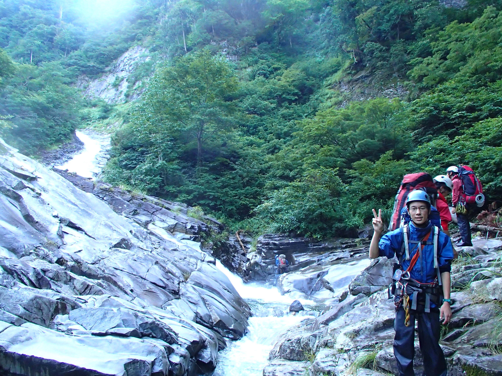

部員紹介 一年会
| 中村凌熙（なかむら りょうき） | ||
 |
||
| 住み処 | 山 | |
|---|---|---|
| 好きな本 | Tillie and the Wall、魔の山 | |
| 好きな山行 | 単独行、あるいは歩く場所を他人に指定されない山行 | |
| 好きな言葉 | 海なんてモーセにぱかっとされてろ | |
| 当面の夢 | 1学期間毎週末参加 | |
| 将来の夢 | 分野を繋ぐ人材 | |
| 大西 大（おおにし だい） | ||
|  | ||
| 好きな本の著者 | リチャード・ドーキンス、ジャレド・ダイアモンド、上橋菜穂子 etc. | |
|---|---|---|
| 募集中 | おすすめの本 | |
| 最近の悩み | 時間がなくて本が読めない | |
| 山で駆られる衝動 | その景色をずっと眺めていたくなる | |
| 今年中にやってみたかったこと | 満天の星空の下でオカン | |
| 10月の沢でやってみた結果 | 寒かった | |
| 大学での目標 | とにかくいろいろな体験をたくさんする | |
| 将来の職業 | 迷い中 | |
| ひと言：バイト… | ||
Copyright(c) 2013 TWV All rights reserved.